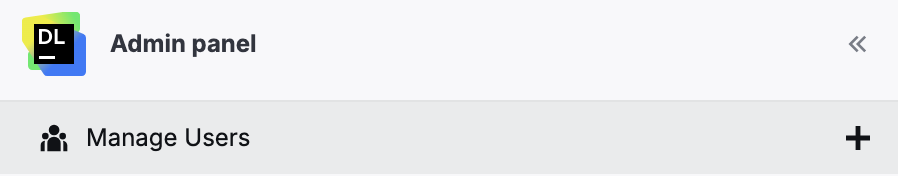
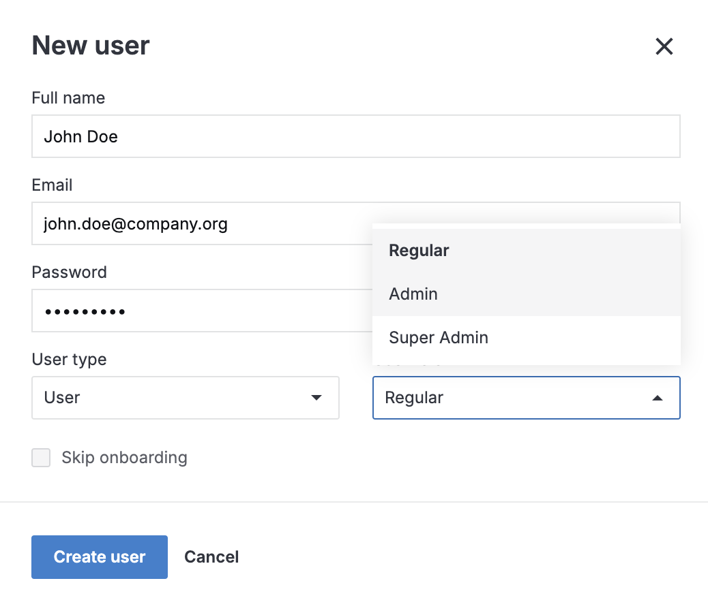
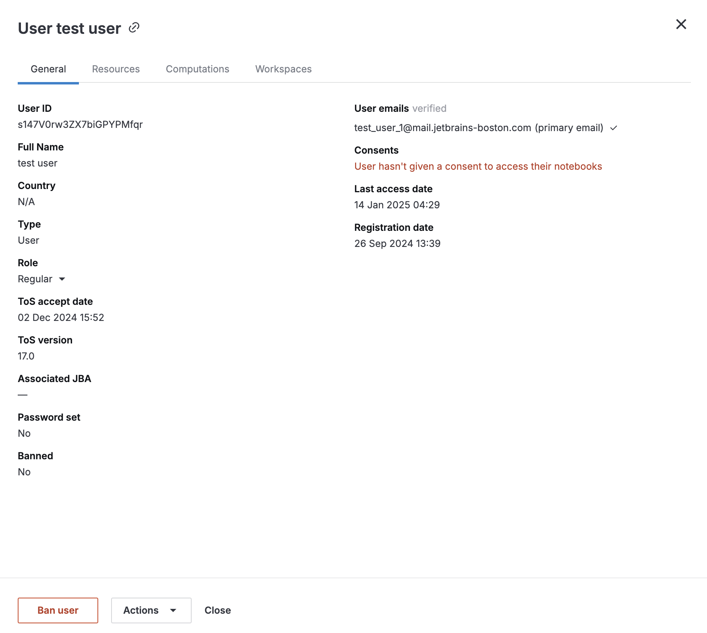
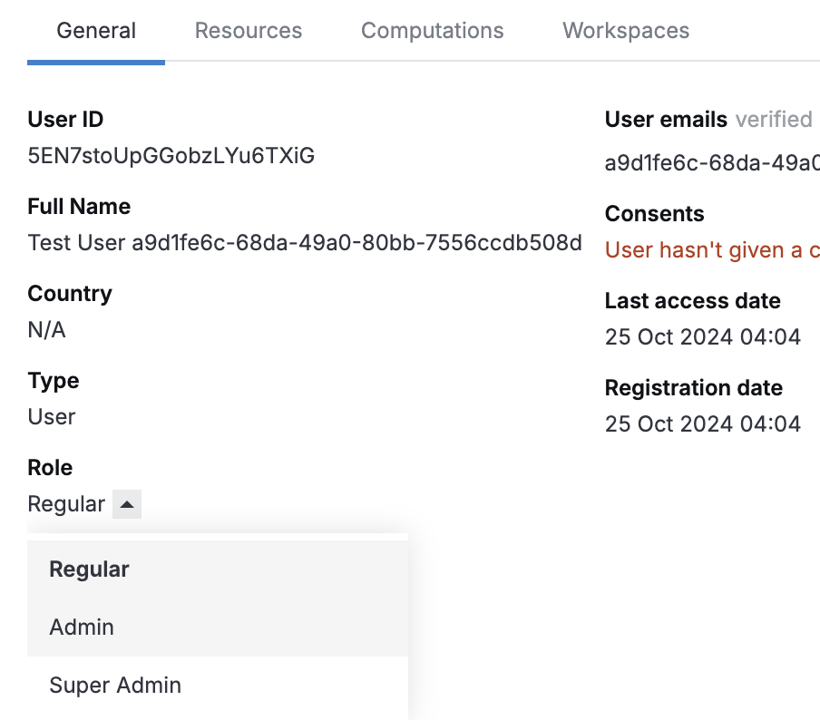
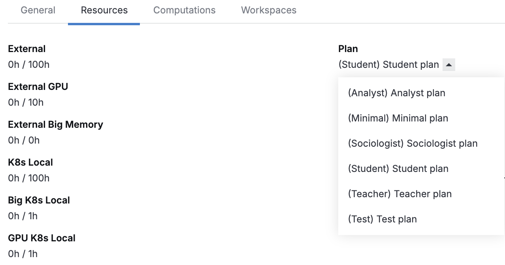
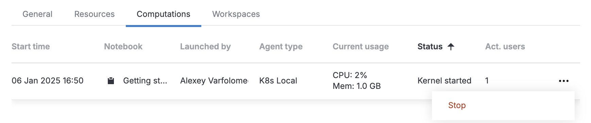
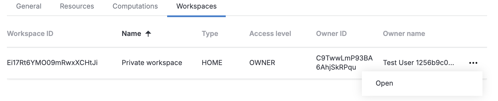
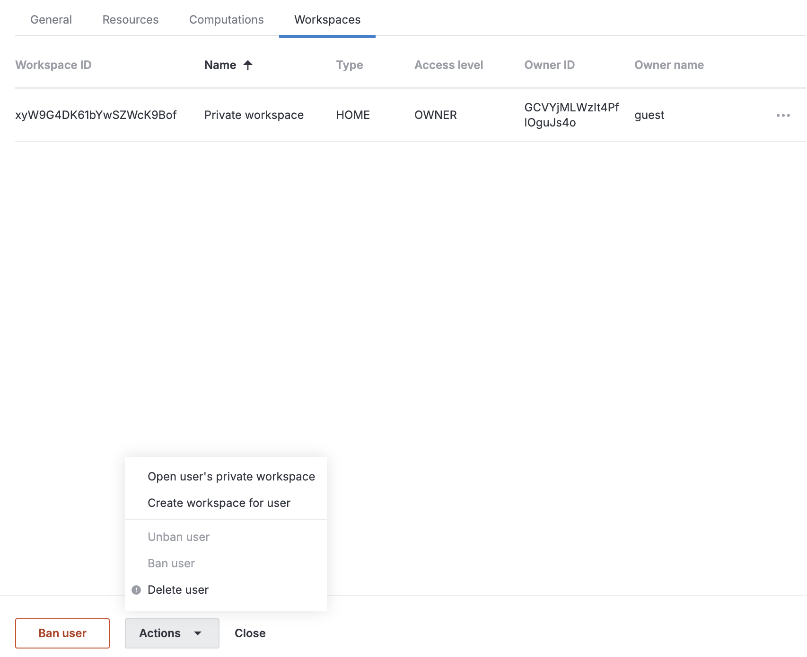

As an administrator, you can use the Admin panel to manage users.
User types and roles
User
A user who can fully use the functionality of Datalore. The admin rights depend on the assigned role (see the column on the right).
A user can cave either of the following roles:
Regular: a regular user who can create notebooks, workspaces and reports but has no admin rights.
Admin: an admin user with access to the Admin panel.
Super Admin: an admin user who can also change other users' roles via the Admin panel. The first registered user registered in a Datalore installation is automatically granted the Super Admin role.
Viewer
A special type of users who can only view notebooks and reports shared with them by other Datalore users. Viewers cannot create workspaces, create notebooks, or publish reports.
Viewers can be upgraded to users, but users can't be downgraded to viewers.
Plans
Plans are used to limit resources that are available for users. You set up plans in Datalore config files (Docker | Kubernetes) and then assign them to users in the Admin panel.
Default personal plan
Assigned to all users according to your Datalore configuration.
Super admins can change it to a non-default personal plan or group plan in the Admin panel.
Non-default personal plan
Can be assigned to an individual user in the Admin panel.
When assigned, the plan takes priority over any group plans currently associated with, or to be associated with, this user until a different personal plan is assigned.
Group plans
Group plans are assigned by super admins to all group members when creating or editing a group in the Groups section Admin panel. They're convenient when the members of a group do not have individually assigned personal plans and you want to select one plan that will work for all of them.
When a user is a member of several groups, the plan that is listed the last in the plan configuration has priority over the other group plans associated with this user. However, assigning a personal plan to a member of a group overrides any current or future group plan assignments for this user.
In the Admin panel, click the plus icon next to Manage users in the left menu.

In the New user dialog, enter the new user's full name, email, and password.
If you want to create a new viewer instead of a regular user, select Viewer in User type.
To assign a role other than the default Regular, expand the list under User role and select the required role. You can't assign roles to viewers.
(Optional) To disable onboarding tips for the new user, select the Skip onboarding checkbox.
Click Create user

Create a viewer (for installation with Hub)
If you're registered in Datalore via Hub, you can create a viewer role in Hub and assign it to another user.
Create the Datalore Viewer role in Hub:
Go to Roles | New role.
Specify the name (arbitrary value), such as Datalore Viewer, and click Create. You will refer to this role by name when granting it to a user.
In Settings, specify the key (datalore-viewer).
Assign the Datalore Viewer role to a user:
On the Users page, select the user.
Switch to the Roles tab and click Grant role.
In the Grant role dialog, enter Datalore Viewer in the Role field.
Set Scope to Global unless configured otherwise.
To close the dialog and finish the step, click Grant.
View user profiles
The user profile lets you view the users' account details, manage their plans and roles, and access their workspaces.
To open a user's profile:
In the Manage Users menu, select the user from the list.

(Optional) To copy the link to the user's profile, click the link icon next to the user's name.
You can find the following information in the user profile tabs:
General tab: user type, user role, and other basic information
Resources tab: user's plan, license details, and machine and storage usage information
Computations tab: user's currently running machines
Workspaces tab: user's Home and personal workspaces
To verify the user's email, click Verify email. You can also resend the verification email if needed.
Change user's role
As a super admin user, you can change other users' roles. To do that:
In the Manage users menu of the Admin panel, select the user from the list.
On the General tab, select a new role unser Role

Change user's plan
As a super admin user, you can manage plans for other users, including assigning a personal plan instead of the default one.
In the Manage users menu of the Admin panel, select the user from the list.
Switch to the Resources tab.
Select the new plan under Plan

The selected plan is assigned to the user and will override any group plans associated with them.
Manage user's computations
In the Manage users menu of the Admin panel, select the user from the list.
Switch to the Computations tab.
Sort the list of computations by clicking the respective column header.
To stop a computation, click the ellipsis icon next to the computation and select the Stop.
To copy the notebook identifier of a specific computation, click the copy icon in the Notebook column.

Manage user's workspaces
In the Manage users menu of the Admin panel, select the user from the list.
Switch to the Workspaces tab.
To open one of the user's workspaces, click the ellipsis icon next to the user and select Open.

You will access the workspace from a new browser tab. As an admin, you can manage the workspace with edit rights.
To create a workspace that will belong to the user, do the following:
Click Actions at the bottom of the user's profile and select Create workspace for user.

In the New workspace dialog, provide a title for the new workspace and click Create workspace.
Ban a user
Banned users cannot perform any action in Datalore, but their accounts stay in the system.
In the Manage users menu of the Admin panel, select the user from the list.
Click Actions at the bottom of the user's profile and select Ban user.
In the Ban user confirmation dialog, specify a reason for the action (optional) and click OK.
To unban the user, click Actions and select Unban user.
Delete a user
This action permanently delete a user and all data associated with them, including all notebooks and their published versions. Deleted data cannot be recovered.
In the Manage users menu of the Admin panel, select the user from the list.
Click Actions at the bottom of the user's profile and select Delete user.
In the Delete user confirmation dialog, click OK.
Disable user registration
As an admin, you can configure whether users are allowed to register themselves.
To disable user registrations, click Disable registrations at the top of the Manage users menu.
To re-enable user registrations, click Enable registrations.

{kind=link}